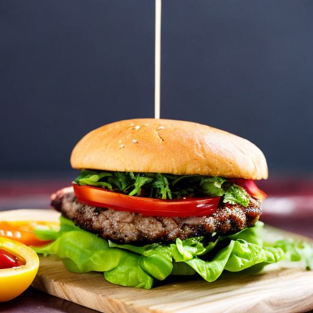

Harmony Burger

Description
Introducing the "Harmony Burger" - a delicious and imaginative vegan creation that will delight your taste buds and leave you craving for more. This extraordinary burger is a symphony of flavors, textures, and colors, carefully crafted to provide a mouthwatering experience for vegans and non-vegans alike.
Ingredients
- Whole-grain bun
-
Plant-based patty:
- Quinoa
- Black beans
- Mushrooms
- Aromatic herbs and spices
-
Vegan aioli:
-
Fresh vegetables:
- Tomatoes
- Lettuce
- Red onions
- Caramelized pineapple rings
-
Dairy-free cheese:
- Nut blend (e.g., almonds, cashews)
- Nutritional yeast
- Jalapeno-cilantro sauce
Steps
- Preheat your oven or grill to medium heat.
- Prepare the plant-based patty by combining quinoa, black beans, mushrooms, and aromatic herbs and spices in a food processor. Pulse until well combined but still slightly chunky.
- Shape the mixture into burger patties of your desired size and thickness.
- Place the patties on a greased baking sheet or grill grate and cook for about 5-7 minutes on each side, or until they are browned and cooked through.
- While the patties are cooking, prepare the vegan aioli by blending cashews and roasted garlic in a food processor until smooth and creamy. Add a touch of water if needed to achieve the desired consistency.
- Slice the whole-grain buns in half and lightly toast them in the oven or on the grill.
- Once the patties are cooked, remove them from the heat and set aside.
- Assemble the Harmony Burger by spreading a generous amount of vegan aioli on the bottom half of each bun.
- Place the cooked patty on top of the aioli, followed by slices of tomatoes, lettuce, red onions, and caramelized pineapple rings.
- Add a slice of dairy-free cheese on top of the vegetables.
- Drizzle the jalapeno-cilantro sauce over the entire creation.
- Place the top half of the bun on the burger.
- Serve the Harmony Burger warm and enjoy its vibrant flavors and textures!